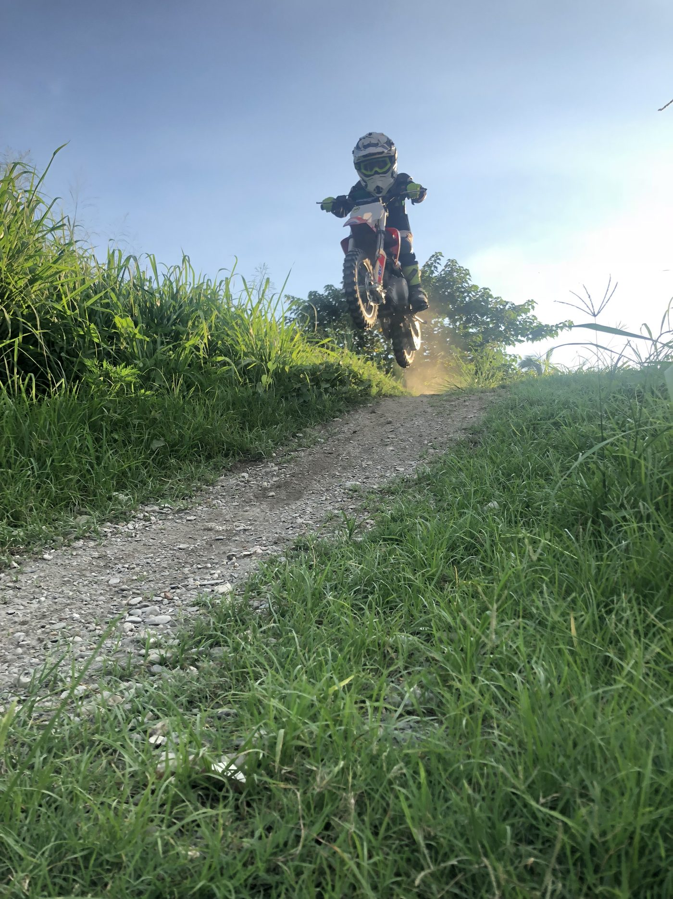
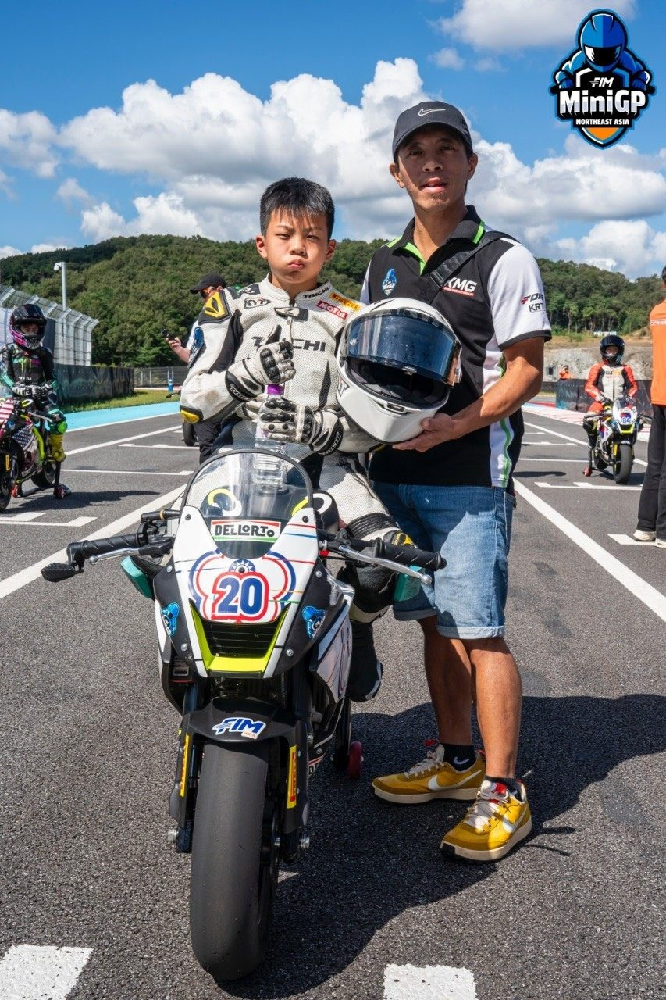

01我的故事
錢品圻自5歲開始在賽車場耳濡目染父親的賽車活動，跟父親要求學習騎乘摩托車，便開始每天騎乘兒童專用的越野摩托車訓練，直到9歲轉換跑道騎乘柏油路賽道，並開始參加國內的越野賽事、台灣機車錦標賽(TSR)、機車耐久賽。


錢品圻自5歲開始在賽車場耳濡目染父親的賽車活動，跟父親要求學習騎乘摩托車，便開始每天騎乘兒童專用的越野摩托車訓練，直到9歲轉換跑道騎乘柏油路賽道…
錢品圻自5歲開始在賽車場耳濡目染父親的賽車活動，跟父親要求學習騎乘摩托車，便開始每天騎乘兒童專用的越野摩托車訓練，直到9歲轉換跑道騎乘柏油路賽道，並開始參加國內的越野賽事、台灣機車錦標賽(TSR)、機車耐久賽。


歷屆成績 · 更新於 2026/01/19
2025 FIM 東南亞系列賽 MiniGP第三站
訓練與參賽計畫
以不影響太多學業課程為主，所以騎乘訓練時間有限(每週六日全天，周一晚間7點-9點)已經從2024維持至今，相比國外的培訓課程少了1/3的訓練時間。
持續參加世界MiniGP系列賽至2026年底年滿14歲報名亞洲天才盃選拔。
2025 FIM 國際摩托車聯盟MiniGP東北亞系列賽年度冠軍
2025 FIM 國際摩托車聯盟MiniGP世界總決賽 前15名
2026 TSR 台灣摩托車錦標賽 150BIKE-B組 年度前三名
2026 FIM 國際摩托車聯盟MiniGP 190cc組 年度前二名
2026 FIM 國際摩托車聯盟MiniGP 190cc組 世界總決賽 前十名
我想達到…
心肺增加攝氧量訓練(公路車、游泳5公里不間斷)
專項競技賽車訓練
114 10/2-10/4 韓國忠清北道賽車場 FIM國際摩托車聯盟 MiniGP東北亞系列賽Round7、Round8、Round9、Round10
114 11/14-11/16 西班牙(瓦倫西亞) FIM 國際摩托車聯盟MiniGP
160cc 世界總決賽
115 全年度 台南安定賽車場/彰化溪湖賽車場 TSR台灣摩托車錦標賽
150BIKE-B組
115 全年度 台中麗寶賽車場 TSS 超級摩托車錦標賽
150 BIKE 原廠組
115 全年度 中國廣州從化賽車場 FIM 國際摩托車聯盟MiniGP
190cc組
強化體能訓練
核心基礎訓練
心肺增加攝氧量訓練(公路車、游泳5公里不間斷)
強化肌力、耐力、核心、協調性訓練為主
1.基本功定圓+繞8穩定訓練
2.賽道騎乘+不定點的三角錐S 型繞行進行換位訓練。
3.單圈競賽/2圈競賽
4.全天候騎乘訓練
5. 越野車繞8前後輪偏滑失控訓練
進攻干擾路線訓練
防守提速路線訓練
近身纏鬥訓練
高強度長時間忍耐力、意志力集中訓練
需求項目與數量（依官方頁面）
| 運動防護費 | NT$ 48,000 |
| 訓練器材裝備費 | NT$ 600,000 |
| 參賽報名費 | NT$ 24,000 |
| 移地訓練費 | NT$ 200,000 |
| 參賽報名費 | NT$ 250,000 |
| 參賽旅運費 | NT$ 300,000 |
| 經費需求合計 | NT$ 1,422,000 |
| NSF250R | 1台 |
| CBR250RR | 1台 |
| Ohvale190 | 1台 |
標示「不公開」者為官方頁面未揭露之欄位。
網路公開搜尋結果，均附原始出處
申請者於體育署捐贈媒合平臺自填的相關連結。
出處：https://www.facebook.com/profile.php?id=100091795764034申請者於體育署捐贈媒合平臺自填的相關連結。
出處：http://www.instagram.com/lucas_.chien?igsh=MXRuN3NqZjZpbDZ3eQ==12歲錢品圻在2025年FIM MiniGP東南亞系列賽澳門站奪冠，取得前進西班牙世界盃資格。
出處：https://www.facebook.com/CTMSA.tw/posts/1361068812044550/錢品圻參加MiniGP韓國站選拔賽190級別四場比賽穩定發揮。
出處：https://www.instagram.com/p/Da0R0TVk92N/FIM MiniGP東南亞系列賽在澳門路環收官，中華台北錢品圻奪第五場兩回合冠軍。
出處：https://macausports.com.mo/news/show_4r3cbzqee5wj5t9ayxgmdngf5p.htmlFIM MiniGP東南亞系列賽澳門站，中華台北錢品圻在週日首回合奪冠。
出處：https://macausports.com.mo/news/show_4p1ytvfthanbw09s1m91bznydc.html